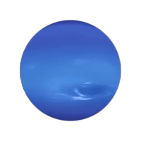

Neptune is the eighth and farthest known planet from the Sun. It is an ice giant, similar in composition to Uranus, with a deep blue color caused by methane in its atmosphere.
Neptune was discovered in 1846 and was the first planet located through mathematical prediction rather than direct observation, after astronomers noticed irregularities in the orbit of Uranus that suggested the presence of another planet. It was named after the Roman god of the sea.
Neptune has a diameter of about 49,244 kilometers, slightly smaller than Uranus. It orbits the Sun at an average distance of about 4.5 billion kilometers, taking about 165 Earth years to complete a single orbit.
Neptune has the strongest winds in the solar system, reaching speeds of up to 2,100 kilometers per hour. It also has large storm systems, including a feature known as the Great Dark Spot, a massive storm observed by Voyager 2 in 1989.
Like Uranus, Neptune is composed of hydrogen, helium, and methane in its atmosphere, with a mantle of water, ammonia, and methane ices surrounding a rocky core. Its internal heat source causes it to radiate more energy than it receives from the Sun.
Neptune has 16 known moons, the largest being Triton, which orbits in the opposite direction to the planet's rotation. This unusual orbit suggests that Triton may have been a captured object from the Kuiper Belt rather than forming alongside Neptune.
Neptune has only been visited by one spacecraft, Voyager 2, which flew by in 1989 and provided the first close-up images of the planet and its moons. No other missions have been sent to Neptune since, making it one of the least explored planets in the solar system.